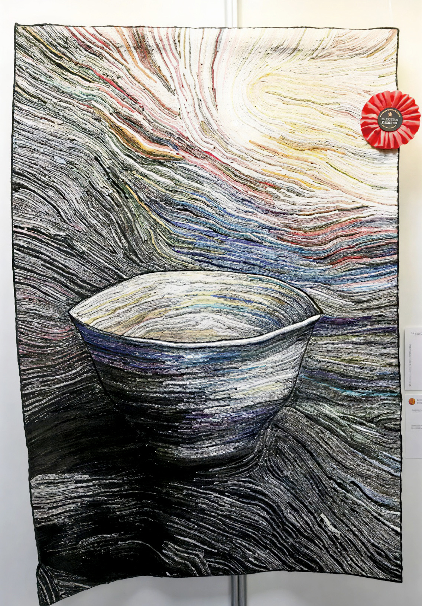
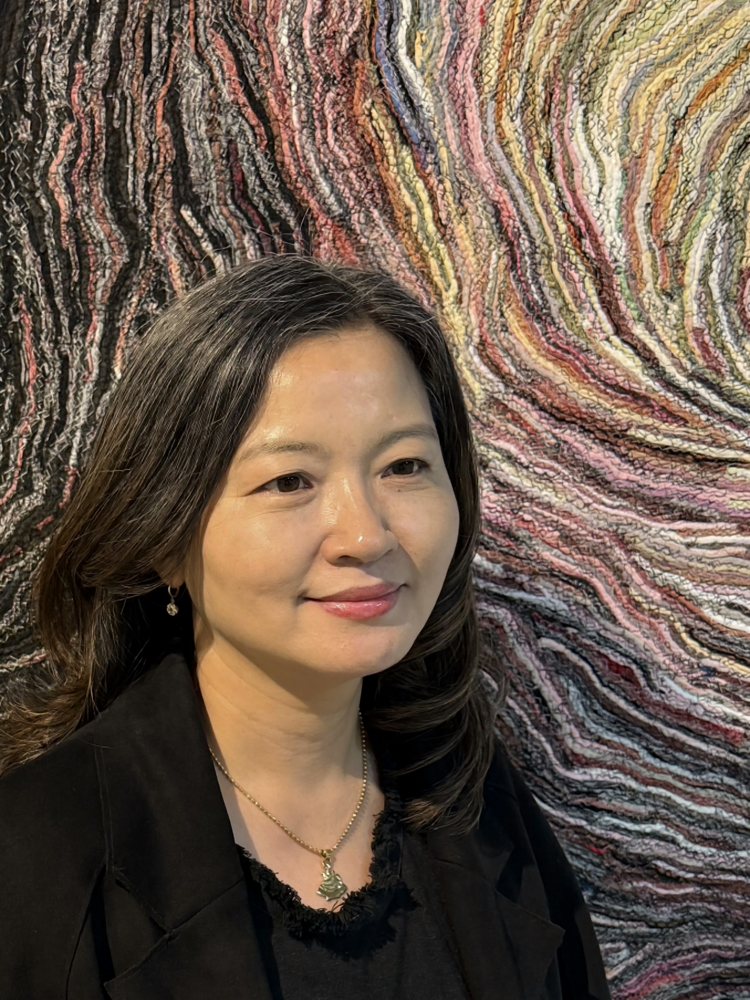

Tea-bowl
The tea-bowl that my mother made was full of sunlight. I drank that love and was happy. Now my daughters grow up drinking my love tea.
When I was young, I used the coiling technique to raise the clay dough step by step. Now I try to make tea bowls by stacking fine fibers.

JUNG EUN TARK
탁정은
Fiber Artist
Master of Fine Arts from Chonnam National University
@jungeun.tark
nayesom0@gmail.com
2025, 2023 Quilt National Artist / USA
2022 EPM Grand Prix / France
2018 Imperial Culture Award / Korea
I try to talk about the relationship between people and boundaries through the repeated process of layering fibers, overlapping them, and connecting them back with threads.
The fabric used as a material is the self that exists organically connected to the family and society from birth.
The repetitive scissors I see in the process of making my work make me independent from the world, and the overlapping of small-cut fabrics and stitching are the process of connecting the relationships I have chosen.
Perhaps I am creating new boundaries that protect me, acknowledging overlapping boundaries with others, and creating a space to breathe with others.
— Artist’s Note
C.V
Solo Exhibitions
2026 ‘Gathering Breath’ / Gally Alm, Army CBRN School
2025 ‘Beyond Boundaries’ / Chonnam National University, Gwangju
2024 ‘Boundaries, Overlapping’ / Insa Art Center G&J Gallery, Seoul
2020 ‘Fill: Similar’ / Chonnam National University, Gwangju
2018 ‘Traveling Boundaries’ / Yanglim Museum of Art, Gwangju
2017 ‘SPRING’ / Gallery Café Jeongryujang, Gwangju
2016 ‘Time to Stay’ / Gallery Café Jeongryujang, Gwangju
2014 ‘Seeing Myself Within Me’ / Gallery Saeng-gak Sangja, Gwangju
2010 ‘JUNGEUN TARK’s Joyful Quilt Exhibition’ / Ilgok Gallery, Gwangju
Booth Solo Exhibitions
2022 Hotel Quilt Fair / ibis Styles Ambassador Myeongdong, Seoul
2019 K-Handmade Fair Invited Artists Exhibition / BEXCO, Busan
2013 SIQF (Seoul International Quilt Festival) Invited Artists Exhibition / COEX, Seoul
Group Exhibitions
2025 World Quilt Festival in Yokohama / Japan
2024 World Quilt Festival in Yokohama / Japan
2023 Crossing Borders in Kyoto / Japan
2019 AQC (Australian Quilt Convention) / Australia
2019 AQS QuiltWeek – Grand Rapids, Fall Paducah / USA
2017 Prague Patchwork Meeting / Czech
2017 ‘Harmony in Moscow’ / Russia
2016 World Quilt 100 in Osaka / Japan
2015 EPM Korean Invitational Exhibition / France
2014 International Quilt Week Yokohama / Japan
2014 Nagano “Quilt Exhibition at Lake Megami” / Japan
2013 International Quilt Festival in Cincinnati / USA
2013 AQC (Australasian Quilt Convention) / Australia
2013 Houston Quilt Festival / USA
2011 Inheritance & Innovation / China
2011 China Quilt Festival / Taiwan
2011 Houston Quilt Festival / USA
2011 19th International Quilt Week Yokohama / Japan
2008 International Quilt Week Yokohama / Japan
2026–2002 KIQA
2025–2021 BERNINA Sewing Festival
2023–2019 1819
2026–2016 QUA11
Collection
EPM (European Patchwork Meeting), France
Dae Han Imperial Cultural Heritage Foundation, Korea
Chonnam National University Museum, Korea
Gallery Saeng-gak Sangja, Korea
Gwangju Metropolitan City Hall, Korea
Gwangju Craft Cooperative, Korea
Gwangju Women's Solidarity for the Disabled, Korea